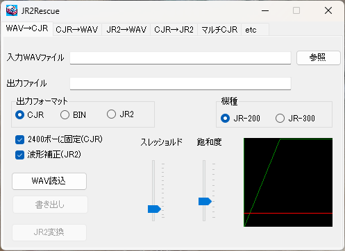
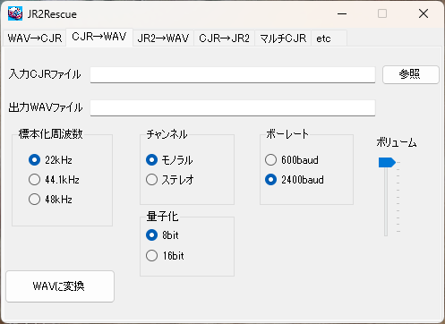
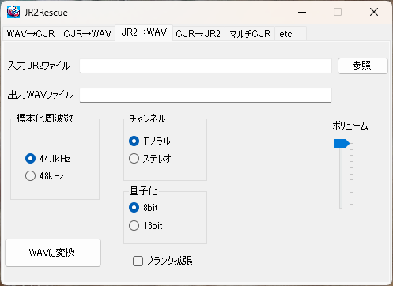
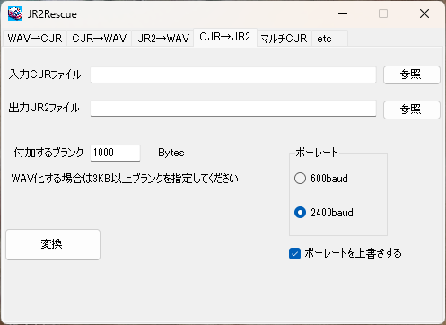

JR2Rescue は JR-200 でプログラムなどを記録した WAVファイルをCJR 形式に変換したり、その他のフォーマットに変換するフリーソフトです。
※ このプログラムは十分な検証がされていません。ユーザー環境に有害な影響を与えるようなことはしていないつもりですが、いかなる損害が生じても当方は一切補償しません。了解の上ご利用下さい。
https://github.com/find-jr200/JR2Rescue/blob/main/JR2Rescue0_6_2.zip (208KB)
ダウンロードしたJR2Rescue を実行しようとすると「Windows によって PC が保護されました。」「実行しない」と表示されます。これは実行プログラムに署名がないせいらしいのだが、署名をつけるための諸々をする気はないので、ここは信用してもらって「詳細情報」－「実行」を選んでもらうしかありません。あしからず。
このプログラムを実行してのバグレポートなどは掲示板またはメール（アドレスはトップページの下の方にあります）にてお願いします。また、読込成功してベーマガプログラムや市販ソフト等のサルベージに成功した方は、よかったらゲーム画面のキャプチャを数点メールしていただけるとうれしいです。当サイトの Software コーナーで紹介させていただきます。
2025.2.23 JR2Rescue 0.6.2 (208KB)
2025.1.4 JR2Rescue 0.6.1
「ボーレート指定の上書き」ON/OFF機能については下記の「アプリケーションの詳細 4. CJR→JR2」をよく読んだうえで使用してください。
2024.2.18 JR2Rescue 0.5.1 (204KB)
2021.11.13 JR2Rescue 0.4.2 (46KB)
2020.8.15 JR2Rescue 0.4.1
2017.9.30 JR2Rescue 0.3.1 (22KB)
2017.1.8 JR2Rescue 0.2.4 公開
2009.6.22 JR2Rescue 0.2.3 公開
エミュのメモリダンプ→CJR機能でコードによってはプログラムサイズを正しく設定していないため、実行後LISTを実行したときなどに異常動作してしまうケースの修正。
2007.12.3 JR2Rescue 0.2.2 公開
ボリュームを一度も変更しない状態で CJR→WAV 化すると、異常な WAV ファイルが作成されてしまうバグを修正。
2007.11.28 JR2Rescue 0.2.1 公開
ZIP ファイルを解凍したら、JR2Rescue.exe と ja フォルダをお好みの場所に移すだけです。
JR2Rescue.exe と ja フォルダを削除するだけです。現状ではレジストリ、設定ファイルなどは使っていません。
WAV のフォーマットは 22KHz8 ビット・モノラルで十分です。内部処理を8 ビット固定にしているので16ビットで録音してもメリットはありません。一応48KHz, 16bit, ステレオでの動作確認はしたけど、それ以上の 96kHz, 24bit とかは無意味なのではねます。
ステレオでもいいけど、左右の平均を取るだけでメリットありません。録音する際の秘訣は出来るだけ大きな音で録音すること。波形がクリップしても構いません。
例えば下の波形は、市販ソフト「カーレース」のオリジナルテープを読み出した波形の一部です（再生はオーディオ用デッキ）
たいていのテープでは、このように2400Hzの波形が1200Hzにくらべて小さくなっているようなので、このままだとうまく読み込みない可能性が高くなります。こんなときのために、JR2Rescue には飽和度調整機能があるのですが、できれば録音するときから波高をならしておきましょう。そのためには1200Hz の波形をクリップさせてしまえばオッケー。もともと実機の出力も SIN ウェーブをクリップしたような波形なのでそれで問題ありません。
理想的な録音状態
また、再生するデッキは出来るだけ走行が安定しているものを。当時はオーディオ用より専用データレコーダがいいとか言われていた気がするけど、この取り込みに関する限り、大事なのは一に出力の安定、二に走行の安定（ワウ・フラッターが少ないこと）。理想を言えばモノラルヘッドを搭載した、クローズドループ・デュアルキャプスタンデッキ、みたいな代物が欲しい ところですが、そんなものは多分ないのでオーディオ用デッキでいいでしょう。今どきのどこ製かわからないようなラジカセ（みたいなもの）は正直怖すぎる。
現状ではワウ・フラッター補正機能や速度補正機能のようなものは実装していません。
ただし、ステレオヘッドで読み込むと不安定になってしまうケースも十分考えられるので、その場合はモノラルヘッドを搭載したプレーヤの方がうまくいく可能性もあります。その辺は色々試してみて ください。 もちろん当時記録に使用したデータレコーダが今も調整完璧で動く、というならそれが理想ですが。
カセットなどに記録したプログラム・データを CJR 形式や、ベタのバイナリ形式にします。

1. 入力 WAV ファイルと機種を指定し、「WAV読込」を押します。「読込に失敗しました」とダイアログが出る場合は、WAV 解析に失敗しているので、飽和度、スレッショルドレベルを変更してみます。
【注意】 JR-300 の CJR, BIN 化機能は実験的機能です。機種の指定を間違うと「変換が正常に終了しました」とメッセージが出ても正常なデータは生成されません。
・ 飽和度
トラックバーを最小にした状態が、「入力＝出力」、つまり飽和度調整をしない状態です。バーを上げて行くに従い飽和度が高くなります。その様子は右のグラフの緑色の線で確認できます。通常はグラフが半分くらいの位置で飽和するようにしておけばいいでしょう（初期値）。
録音された波形のムラが大きい場合、録音レベルが小さい場合は少しずつ上げてみてください。ただし上げすぎるとノイズを拾うようになり誤動作の原因になります。
・ スレッショルドレベル
グラフ上の赤線で表されます。この値を基準に 0/1 を判断します。この値は基本的に初期値のままにしておいてください。飽和度と併用する限りあまり意味を持ちません。何らかの理由で飽和度調整を使いたくない場合はこの値を調整してみてください。
2. CJR, WAV に関して「WAV読込」に成功した場合は「書き出し」のボタンが有効になります。出力フォーマットを選択して「書き出し」ボタンを押してください。異なったフォーマットを立て続けに書き出すこともできます。JR2 の場合は「JR2 変換」を押すだけで変換し書き込みます。
・ CJR 某エミュレータのテープフォーマット。
・ BIN CJR 形式から、カセットテープに記録するための情報を抜き去ったベタのバイナリ形式。例えば MSAVE したファイルなら、バイナリのデータのみが書き出されるので、ROM を MSAVE して Windows 上で解析したい、なんて時に使う。
・ JR2 WAV を直接 JR2 にしたいときに使用します。通常のフォーマットに対しても使用できますが、この場合チェックサムがあっているかどうかのチェックは行わないので、特殊フォーマットのテープに対してのみ使用することをお勧めします。JR2 に変換後に「変換が正常に終了しました」とダイアログが出ても正常に LOAD 出来るとは限りません。
・ 2400ボーに固定（CJR） 通常は必ずチェックした状態で使用してください。ボーレート指定が600ボーになっていると海外製エミュレータでロードできません。特殊な理由で600ボーに指定された CJR を作りたいとき、ボーレート指定がない特殊フォーマットの場合のみチェックを外してください。
・ 波形補正（JR2） 読み込んだ波形を 1200Hz か 2400Hz になるように補正します。通常はチェックした状態で変換し、それでは正常に読み込みできない場合はチェックを外して試してみてください。
CJR 形式のファイルから実機で読み込める WAV ファイルを生成します。

入力 CJR ファイルに変換元のファイルを指定し、PCM フォーマット、600baud / 2400baud を選択して「WAVに変換」を押してください。通常は 2400baud を選択すればいいでしょう。
JR2 ファイルを WAV ファイルに変換します。

【注意】 WAV→JR2 機能で作成した JR2 ファイルを再び WAV にすることはできません。大音量のノイズが記録されている可能性があり、再生するとスピーカーなどを破損したり聴覚にダメージを与える可能性があるためです。
入力 JR2 ファイルと出力 WAV ファイルを指定し、PCM フォーマットを選択して「WAVに変換」を押してください。
WAV 化した際に JR2 ファイルにもともと付加してあるブランクでは正常に読み込めない場合は「ブランク拡張」にチェックを入れてください。プログラム、データ間のブランクが5秒程度になります（もともとのブランクがそれより長い場合はそのままになります）。ただし、もともとの JR2 ファイルがブランクなしで作成されている場合は、「ブランク拡張」にチェックを入れても拡張されません。その場合は JR2 ファイルをブランクありで作り直してください。
CJR ファイルを JR2 フォーマットに変換します。

出力ファイルについて、
既存のファイルを指定した場合 → 末尾に追記
存在しないファイルを指定した場合 → 新規作成
となることに注意してください。新規作成したい場合は直接フルパスでテキストボックスに入力するか、「参照」を押してフォルダを選択し、ファイル名ボックスに作成するファイル名を入力してください。
「付加するブランク」は、海外製ソフトなどでブランクを付加しないと正常にロードできなくなるものに必要です。具体的には「シュワッシュバックラー」など、コムパックから発売された海外製ゲームが該当します。これらのゲームを JR2 化する場合は最低でも 1000 から 1500 バイト以上のブランクを指定してください（多い分には問題なし）。必要なブランクはソフトによって異なりますが、シュワッシュバックラーは 1500 バイト、それ以外は 1000 バイトで試してください。それでも正常にロードできない場合はさらにブランクを増やしてみてください。
●ボーレート指定について
通常フォーマットのテープについては、 JR2 ファイルを VJR-200 で読み込む限り 600 ボーと 2400 ボーで精度に差はないので、特殊な実験目的などを除いて 600 ボーを選択する意味はありません。
ただし一部の海外製特殊フォーマットのソフトに関しては 2400 ボーではロードエラーになるため、600ボーで作成する必要があります。
「ボーレート指定の上書き」ON/OFF機能は特殊フォーマットの CJR を追加する時のみ利用する機能です。通常の CJR はオンにしてボーレート指定バイト（ヘッダブロックの24バイト目）を指定ボーレートに書き換えますが、ヘッダブロックがない特殊な CJR を書き換えるとデータを破壊してしまうため、この機能をオフにします。
通常は「ボーレート指定を上書きする」は必ずチェックした状態で使用してください。
■マルチCJRとは■
通常の MSAVE では作成できない離れた領域（マシン語とユーザー定義文字領域、ユーザー定義領域1とユーザー定義領域2、テキスト VRAM とアトリビュート VRAM など）を一つの CJR ファイルにまとめたものです。ロード時の動作の違いから BASIC プログラムを含めることはできません。あくまで MSAVE したファイルを一つの CJR にまとめたものであることに注意してください。
1. MSAVE した CJR ファイルをリストボックスにドラッグ＆ドロップします。ファイルを削除するときは、選択して Delete キーを押してください。複数ドロップすることができますが、BASIC ファイル（＝SAVE したファイル）は書き出し時にエラーになります。
2. マルチ CJR ファイル名と JR 用ファイル名を指定して書き出しを押してください。
1. 某エミュレータが吐き出す、メモリイメージファイルから、BASIC プログラムを抜き出し CJR 化します。
2. バイナリファイルを CJR 化し、MLOAD できるようにします。
1. 某エミュにて BASIC プログラムを入力したら、[File] - [SaveRam] とすると、某エミュの実行ファイルと同じディレクトリに「ram.bin」なるファイルが作られます。これを「メモリイメージファイル」に指定し、「CJRに変換」を押すと、ファイルセーブダイアログが表示されるので、名前を指定して下さい。
2. Windows 上などでユーザー定義文字データやマシン語プログラムを作成します。このファイルはベタのバイナリ形式とし、よけいな物は入れないでください。またバイナリエディタは各自で用意してください。
入力 BIN ファイルに作成したバイナリファイルを指定し、MLOAD するスタートアドレス、JR 用ファイル名を指定して下さい。ちなみにスタートアドレスはユーザー定義文字なら C000 など、マシン語なら 7000 などになります。
「CJRに変換」を押すと、出力するCJR ファイル名を指定するダイアログが開くので、名前を指定して下さい。
※ JR用のファイル名は、文字種などにどういった制限があるのかよくわからないので、ほとんどチェックしていません。英数字（とカナも使えるみたいだけど）など、無難な文字だけ使うようにしたほうが安心です。
［TOP PAGE］